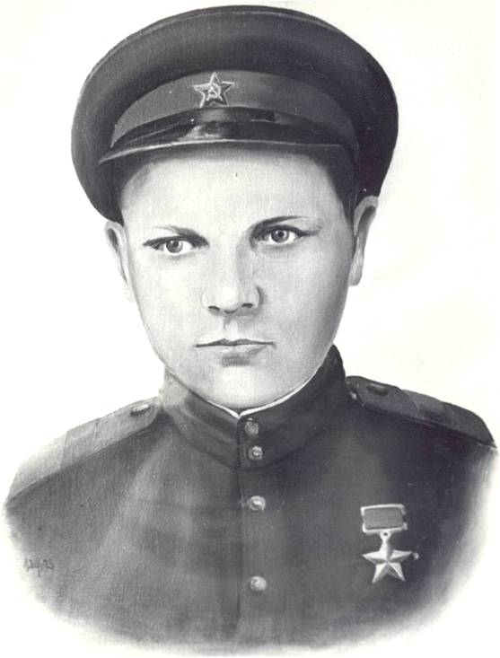

Барболин Николай Степанович
(01.03.1922 – 12.05.1944)
Герой Советского Союза. Гвардии старший сержант. Родился в д. Починок Рогово Бобровско-Захаровской волости,
впоследствии Сараевского сельсовета Кичменгско-Городецкого района. Окончил Сараевскую начальную школу.
В 1939 году уехал на работу в Архангельск и оттуда в 1940 году был призван в армию.Окончил школу истребителей танков. С первых дней Великой Отечественной войны находился на фронте в качестве наводчика противотанкового орудия.
Когда шли уже наступательные бои. Н.С. Барболин воевал командиром 45-мм орудия 115 противотанкового полка 7 гвардейской армии под командованием генерал-лейтенанта М.С. Шумилова. С 6 по 10 октября 1943 года его расчет вел тяжелые бои. Им одним из первых удалось форсировать Днепр и занять плацдарм, который потом назвали «Барболинским заслоном». За этот период было уничтожено 5 огневых точек врага, до 20 солдат противника, два танка «Т-4» и один «Тигр». Когда погибли все бойцы расчета, Н.С. Барболин один продолжал вести бой и подбил еще три танка.
14 октября 1943 года Указом Президиума Верховного Совета СССС ему было присвоено звание Героя Советского Союза. В январе 1944 года Н.С. Барболин был тяжело ранен осколком снаряда в боях за г. Кировоград и скончался в госпитале на 22 году жизни. Похоронен со всеми воинскими почестями в г. Кировограде на Украине на воинском кладбище.
В честь его одна из улиц города названа его именем и на одном из домов установлена мемориальная доска, а на могиле обелиск. В краеведческом музее в одной из экспозиций помещены документы, рассказывающие о подвиге героя. В мае 2008 года делегация вологжан от правительства области побывала на праздновании Дня Победы в г. Кировограде. В составе делегации был и племянник Героя Николай Александрович Барболин, который привез с собой горсть земли на могилу дяди и посадил рядом три привезенные с родины березки.
Когда шли уже наступательные бои. Н.С. Барболин воевал командиром 45-мм орудия 115 противотанкового полка 7 гвардейской армии под командованием генерал-лейтенанта М.С. Шумилова. С 6 по 10 октября 1943 года его расчет вел тяжелые бои. Им одним из первых удалось форсировать Днепр и занять плацдарм, который потом назвали «Барболинским заслоном». За этот период было уничтожено 5 огневых точек врага, до 20 солдат противника, два танка «Т-4» и один «Тигр». Когда погибли все бойцы расчета, Н.С. Барболин один продолжал вести бой и подбил еще три танка.
14 октября 1943 года Указом Президиума Верховного Совета СССС ему было присвоено звание Героя Советского Союза. В январе 1944 года Н.С. Барболин был тяжело ранен осколком снаряда в боях за г. Кировоград и скончался в госпитале на 22 году жизни. Похоронен со всеми воинскими почестями в г. Кировограде на Украине на воинском кладбище.
В честь его одна из улиц города названа его именем и на одном из домов установлена мемориальная доска, а на могиле обелиск. В краеведческом музее в одной из экспозиций помещены документы, рассказывающие о подвиге героя. В мае 2008 года делегация вологжан от правительства области побывала на праздновании Дня Победы в г. Кировограде. В составе делегации был и племянник Героя Николай Александрович Барболин, который привез с собой горсть земли на могилу дяди и посадил рядом три привезенные с родины березки.